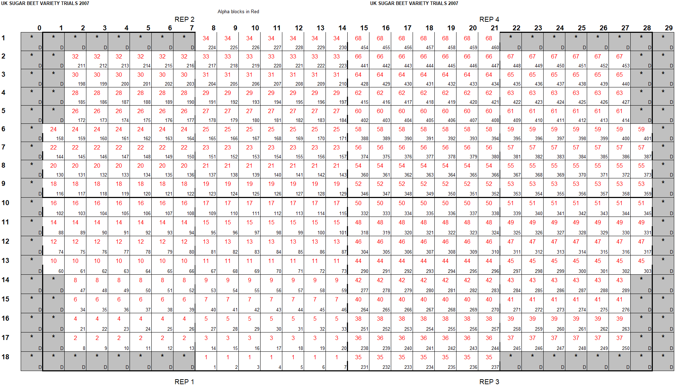
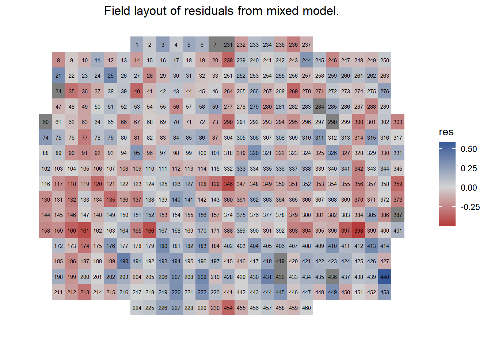
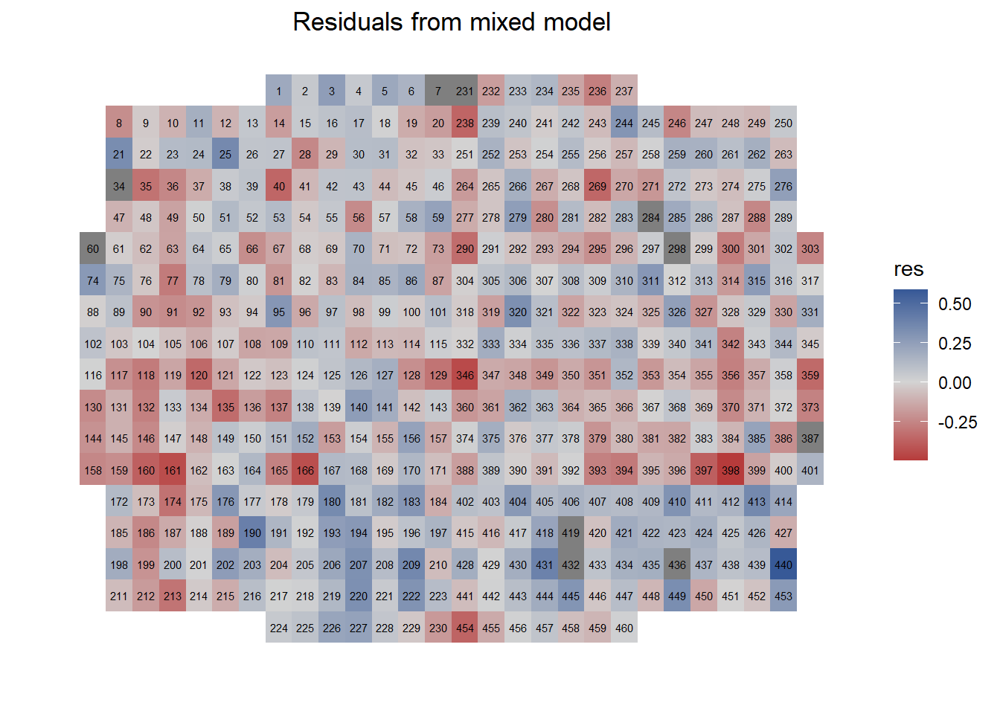
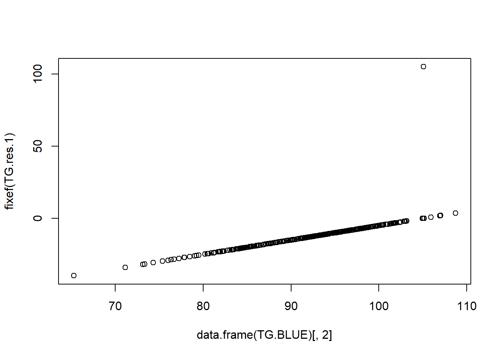

Chapter 5 Trial analysis (single-site).
5.1 The layout of the sugar beet trial
These data are from an NL/RL sugar beet trial grown in 2007, designed as an alpha design. We shall analyse this in several different ways, using it to introduce REML as a routine algorithm for the analysis of this sort of data and also to look at the improvements over randomised complete blocks that incomplete blocks and spatial analysis can bring. I’ve scrambled the names of varieties to avoid anyone’s embarrassment. This is a variable site, chosen to illustrate the advantages of more sophisticated trial design.
The design of the trial is as follows:
DESIGN TYPE INCOMPLETE BLOCK
PLOTS 460
REPLICATES 4
BLOCKS/REP 17
VARIETIES 115
PLOTS/VARIETY 4A typical sugar beet plot is in three rows wide, 0.5m apart and is 12m long, with 10m harvested – the two discarded metres are the alleyways between the plots used by tractors for spraying. I make this trial to be 28 plots = 42m wide and 18 plots = 216m long.
 For a better impression of the above image: there is a file called “sugar_beet_trial R.xls” in the data folder for this chapter. Inspect the field plan book.
The incomplete blocks run along the rows of the spreadsheet. Note that to accommodate the variety number and the shape of the field, the block sizes are unequal and that there are discard plots within the trial area.
5.2 Fixed effects, random effects and REML
Fixed effects are generally the things you are interested in such as variety performances, fertilizer treatments etc. Random effects are often things that you are not interested in that get in the way of getting good estimates of the fixed effects such as field fertility effects; and therefore also include factors in the design to control for field fertility effects such as replicates and incomplete blocks. Residual errors from any analysis are always random effects. Over multiple trials, the sites and year effects can be viewed as random. There is ambiguity: sometimes varieties can be viewed as a random sample from a population of possible varieties. The most pure examples of this would be a set of RIL’s from an F2 or clones from a cross between two outbred parents. All data are analysed by fitting a model; even a t-test fits a model. A dataset in which some effects are fixed and some effects are random is called a mixed model. REML, residual (or restricted) estimation by maximum likelihood, is an algorithm for analysing mixed models. Variety trials, either individually or in sets, are now routinely analysed by mixed models. This is because some aspect of them - blocks, reps, sites, years and interactions of these with varieties - are often treated as random effects. Increasingly, varieties are treated as random too. There are advantages and disadvantages to this. The decision depends on the objectives of the experiment.
5.2.1 Preparing the data
The data are saved in the Chapter 5 data folder sorted as columns within rows. The CSV file is called: “sugar_beet_data.csv”
beet.data.
The discard plots have been left out of the file as they had missing data. However, if they had been measured for each trait, it would have improved our fertility correction. Note there are some missing data included as NA: measurements which failed.
We’ll work with four of the traits which were recorded:
Number of roots measured before harvest – can have an obvious effect on yield in a row crop like beet. Closely correlated with emergence too.
Sugar content – the proportion of the fresh weight of a root which is sugar.
Sugar yield.
Total impurities – a measure of the chemical crud in the beet which affects the efficiency with which the factory can extract the sugar from the root.
I’ve selected these because they are the most important characters and can also show different patterns of variability within a trial and among varieties.
There is no need to analyse all the characters. This year we’ll concentrate on sugar content.
Let’s take a look at our column headers in the data object beet.data that you’ve created above:
colnames(beet.data)## [1] "rep" "column" "row" "plot"
## [5] "block" "variety" "roots" "sugar.content"
## [9] "yield" "impurities"If you don’t get the same result on your PC, you may have left out the required: headers=T argument in the read.csv command. The first 6 columns are experimental design information and therefore need to be treated as factors. We can inspect how R is currently treating them using:
str(beet.data)## 'data.frame': 460 obs. of 10 variables:
## $ rep : int 1 2 3 4 1 2 3 4 1 2 ...
## $ column : int 9 4 17 21 14 4 15 19 9 1 ...
## $ row : int 14 4 14 8 10 3 15 7 18 9 ...
## $ plot : int 54 187 279 366 115 200 264 378 2 116 ...
## $ block : int 9 28 42 54 17 30 40 56 1 18 ...
## $ variety : int 469 469 469 469 468 468 468 468 467 467 ...
## $ roots : int 160 153 157 156 151 160 157 159 154 145 ...
## $ sugar.content: num 19.1 18.9 19.4 19.2 18.1 ...
## $ yield : num 12.6 10.6 12.3 12.4 14.6 ...
## $ impurities : num 2.39 2.38 2.37 2.37 2.29 ...That’s informative. The trait data (roots, sugar.content, yield and impurities) are treated as either numeric or integers. That’s how we want R to treat the phenotypes. However, the experimental design columns (first 6) are treated as integers. We need to convert these to factors. Use the command: factor().
You can do this for each individual column, referring to it by name [eg factor(beet.data$rep)] or by index [e.g. factor(beet.data[,1])]:
Or put it into a loop if you wish to speed things up:
for (i in 1:6) {
beet.data[, i] <- factor(beet.data[, i])
}If you want help understanding how the loop works you can ask a demonstrator or refer to Chapter 3.
As we saw in the R introduction chapter, some analysis in R requires NA to be removed in the response variable. We could do that using:
beet.for.anal<-subset(beet.data,!is.na(sugar.content))
However, I don’t think we need to worry about that here; the functions we are using have in built handling of NA.
There are some points to consider before we start:
Watch out for negative variance components – if you get them, drop that term from the analysis. This is true for all mixed model analyses - not just for variety trials.
“Informative missingness.” Usually we should check that missing data are not associated with a particular variety. Not so much in variety trials, but in case-control analysis of disease risk, this can result in major problems.
5.2.2 Randomised complete block design
You should get the same result as from an ANOVA, as with REML. Try both.
Note that there are some missing data, so the values in the analysis of variance table will vary slightly depending on the order in which terms are fitted. You should fit varieties last.
Using lm, the standard method for fitting linear models in R:
RCB <- lm(sugar.content ~ rep + variety, data = beet.data)
anova(RCB)## Analysis of Variance Table
##
## Response: sugar.content
## Df Sum Sq Mean Sq F value Pr(>F)
## rep 3 4.111 1.3702 36.837 < 2.2e-16 ***
## variety 114 62.928 0.5520 14.840 < 2.2e-16 ***
## Residuals 332 12.349 0.0372
## ---
## Signif. codes: 0 '***' 0.001 '**' 0.01 '*' 0.05 '.' 0.1 ' ' 1data = beet.data? You could use attach(). However, I find it can lead to downstream issue when you start subsetting data.
We could have carried this out in one step:
anova(lm(sugar.content~rep+variety,data=beet.data))
It makes more sense to save the output first as there is other information we want to extract. In particular we would like to see the line means.
Run this on your computer:
summary(RCB)As you will see, this gives more information that we require, but it is worth knowing the command is there.
RCB$coefficientsgives the “coefficients” without the other information, Note, however, that we are missing an entry for rep 1. You may also observe that we are missing an entry for variety 1.
R, rather than providing simple means, as you would get if you analysed the data by hand (or e.g. by GenStat) expresses results as a deviation from an “Intercept.” The intercept is the mean for rep 1, variety 1. You can adjust for this by adding the “Intercept” to all other values. As it is usually the differences between varieties we are interested in, this doesn’t matter, though is not very satisfying. However, there are some packages to do this for you. One example is emmeans (Lenth 2020) which will do this job, and more. Another example is predictmeans (Luo, Ganesh, and Koolaard 2020) which runs faster in my experience, so we’ll use that for this tutorial. You will need to install the package by running:
install.packages("predictmeans")
# Then load it via
library(predictmeans)This package only has a few functions but it provides some detailed summaries and diagnostics for a large range of different models. The key function is: predictmeans.
RCB.vars <- predictmeans(RCB, "variety", plot = F)That’s saved a list object called RCB.vars which contains the functions output. There’s a lot of information there, but for now we are just after the line means in a sensible format, which we can access using:
RCB.vars$`Predicted Means`[1:5]## variety
## 1 55 105 150 155
## 17.9850 18.6025 17.7475 18.3750 18.2625Note I’ve added [1:5] to save paper. Print on your screens without [1:5] included. If we access another part of the function output, we can print the first ten standard error of the means:
RCB.vars$`Standard Error of Means`[1:10]## variety
## 1 55 105 150 155 157 166 189 194 204
## 0.09643 0.09643 0.09643 0.09643 0.09643 0.09643 0.11148 0.09643 0.13668 0.09643GenStat and ASReml (and other packages?) also provide standard errors of differences between variety means, and this is often the information used in comparing different statistical analysis methods of analysis.
The function has already calculated this for us, we just need to access it from our saved object:
RCB.vars$`Standard Error of Differences`## Max.SED Min.SED Aveg.SED
## 0.1765377 0.1363749 0.13844015.2.3 Randomised compelete block design - with mixed models
Next, we are going to use the package ‘lme4’ (Bates et al. 2020). Using the techniques you’ve mastered, install and load this package to your R environment. This is typically the package that R users would use to fit and analyze linear mixed models.
RCB.lmer <- lmer(sugar.content ~ variety + (1 | rep), data = beet.data)Print the output of RCB.lmer to your own computers and inspect the output. The (1|rep) structure fits replicates as a random effect.
lm. Here it should make little difference. Why is this?
There are a number of useful commands that we can use to inspect our fitted model:
anova(RCB.lmer) will give you a test for significance of the fixed effects in the model (here varieties). These will be very similar to those from lm. The tiny difference arises from the treatment of missing data. (With replicates treated as random, there is some information about varieties in between replicates comparisons.)
ranef(RCB.lmer) will give you the random effects for replicates.
fixef(RCB.lmer) will give you the fixed effects for varieties. Note that variety 1 is missing again. Its effect, as a deviation from the intercept is zero).
summary(RCB.lmer) gives a lot of output, mainly consisting of correlations among the estimates of the fixed effects. At the top are the estimates of variance components and a list of fixed effects and their standard errors. Note: the standard deviation listed alongside the variance component is just the square root of the variance component. It is not a measure of precision.
As before, the fixed effects are all expressed as deviations from variety 1. An easy way to see the fitted means is to alter the way the model parameters are fitted:
test <- lmer(sugar.content ~ variety + (1 | rep) - 1, data = beet.data)summary(test) will now give all variety means and their standard errors. Again, there are no standard errors of differences. Alternative summaries of the efficiency of the analysis are to look the F ratio or p-value for the variety effects, or use Akaike’s Information Criterion.
As before, we can again use predictmeans to extract our fitted means and standard errors.
RCB.lmer.vars <- predictmeans(RCB, "variety", plot = F)You can then inspect components of the saved list RCB.lmer.vars, such as Predicted Means and Standard Error of Means. Results are similar to those we had before. To get the average standard error of variety differences, if desired, we can edit and re run the previous commands:
RCB.lmer.vars$`Standard Error of Differences`## Max.SED Min.SED Aveg.SED
## 0.1765377 0.1363749 0.1384401We can check on the fit of the model. Residuals and fitted values are available as:
resid(RCB.lmer) and fitted(RCB.lmer). We should plot several elements of the model to inspect the fit and check the assumptions. Such as the distribution of the residuals, residuals against fitted values and observed against fitted values. Thankfully, predictmeans has a function that takes care of this for us:
residplot(RCB.lmer)All these plots look acceptable to me.
5.2.4 Plotting residuals against field structure.
It is always worth checking the pattern of the residuals in the field layout. There is a method for doing this in R which can be quite resourceful. It requires row and column to be set to numeric. If you remember we changed these to factors at the start of the tutorial, we can check the current type (or mode) of a column using class:
class(beet.data$column)## [1] "factor"class(beet.data$row)## [1] "factor"Let’s keep these columns as factors but save new columns with row and column as numeric, this is easy in R:
beet.data$c <- as.numeric(beet.data$column)
beet.data$r <- as.numeric(beet.data$row)Something that is not as simple is our NA pattern in the data. We need to extract the residuals from our model and then add a column to our dataset, so the plotting function can use our layout and residuals at the same time. This is problematic because we have NAs in our phenotype, which were ignored in the model. This means we have fewer residuals than we have plots:
length(resid(RCB.lmer))## [1] 450length(beet.data$plot)## [1] 460There’s a 10 plot difference, which is explained by the plots with NA for sugar.content:
sum(is.na(beet.data$sugar.content))## [1] 10This is a classic R problem, as it stands R won’t let us merge columns of different length (which is a good thing). We could have taken the NA plots out of the data beforehand - but this can mean multiple data sets if we have multiple traits. Here’s a neater solution:
# identify which positions contain non NA phenotypes and save
# as vector called sel
sel <- which(!is.na(beet.data$sugar.content))
# create column with all entries marked as NA in main data
beet.data$res <- NA
# extract residuals from our model and save in the positions
# of none NA data points
beet.data$res[sel] <- resid(RCB.lmer)I’ve used the # symbol to break down what each step does. In short - we now have residuals + those 10 NA plots in the correct place in our data and we can plot the residuals against the field layout. You will need to download and load the R package: desplot (Wright 2020).
The command we then run is desplot:
desplot(beet.data, res ~ c + r, text = plot, cex = 0.5, gg = T,
main = "Field layout of residuals from mixed model.")
That’s worked well (note - NA plots appear to be marked as gray). The command has several arguments (see help(desplot)), the ones we’ve used were:
beet.datasimply the name of our datares ~ c + ra formula that tells the function to plot residuals against columns + rowstext=plotthis labels each plot, which is very helpful (note the image is flipped compared to our first inspection of the trial layout)gg=Tplots viaggplot2which speeds up the plotting function
You can see patches of high and low residuals. The residuals can show patterns of field fertility that are not controlled by the experimental design. You can see here such patches of high and low residuals. This is not too surprising as this is a large trial and the only control of field fertility effects in the analysis is through replicates. As these are large, variation within replicates is not so well controlled. That is why we use incomplete block designs.
You can use this plotting method to plot out other elements of the data against the field structure:
- We could have plotted our actual raw trait values and inspect obvious issues in the data.
- We could use it plot the NA structure of the data. This would help us look for meaningful NA patterns.
- We could use it to visualise the field structure and trial layout, you can add e.g. blocks and reps etc to the image and create figures for publications or presentations.
The package for spatial analysis we shall use later will produce similar plots within R.
5.2.5 Alpha design (include block structure)
We shall now fit the alpha design block structure, which will take account of blocking design structure. We can compare standard errors and look at the fertility patterns again. Will the alpha design offer any improvements?
To include blocks, fit as random effects using lmer. Add blocks to the previous run of lmer as (1|block).
(1|rep/block). The / nests the term following it within the term preceding it, so that in this case 4 x 17 block effects are correctly fitted.
Here’s how I ran the analysis:
alpha <- lmer(sugar.content ~ variety + (1 | rep) + (1 | block),
data = beet.data)
anova(alpha)## Analysis of Variance Table
## npar Sum Sq Mean Sq F value
## variety 114 56.735 0.49767 18.851alpha.lmer.vars <- predictmeans(alpha, "variety", plot = F)
alpha.lmer.vars$`Standard Error of Differences`## Max.SED Min.SED Aveg.SED
## 0.1599940 0.1206777 0.1245988This gives me an average standard error of a variety difference of 0.1246, a reduction of about 10% compared to the RCB design. The average variance of a difference from the alpha design divided by that from the RCB design is termed efficiency and is 123%.
5.2.6 Rows and column analysis
As a final refinement, you should now use lmer to model the random effects as:
(1|rep/row)+(1|rep:column)
Now we can compare the standard errors of the differences from the mixed model across our 3 trial analysis models:
- RCB 0.13844
- Alpha 0.12460
- Row and Column xxx (you can fill this in? see question below)
As an alternative, to compare the different analyses, we can also tabulate the F statistic from the analysis of variance:
anova(RCB.lmer)## Analysis of Variance Table
## npar Sum Sq Mean Sq F value
## variety 114 62.935 0.55206 14.842For the other designs I get:
- RCB = 14.842
- Alpha design = 18.851
- Row and column design 24.442
The process of changing the trial design after the analysis is called post-blocking. For studies of alternative designs: to suggest improvements to the blocking structures used in the future, it is acceptable. However, it should not be used routinely to estimate variety means as the standard errors, if not the effects themselves, will be biased by continually searching to find the better fitting model. You should stick to the analysis appropriate to the experimental design.
5.3 Spatial analysis
Field fertility effects are not typically restricted to the blocks, reps, rows and columns of your trial design and you may need a more sophisticated method to capture a spatial effect in the field. We saw earlier in the plot of our residuals in the rows and columns of the trial layout that there were clear non random high and low areas in our field associated with the phenotype:
desplot(beet.data, res ~ c + r, text = plot, cex = 0.5, gg = T,
main = "Residuals from mixed model")
In that model we just included replicate and clearly missed patterns in our data. If we were to plot the residuals after fitting block, rows and column, hopefully we would account for what was missed. However, in some cases the trial design components still don’t adjust appropriately for the noise in the data and we might be able to find a better model by running a spatial analysis.
Autoregressive models of order 1 (AR1: the standard methods of spatial analysis of yield trials) are available in GenStat or ASReml and guides to their use in these packages are available. ASReml is available in an R version, so it is easy to start using it if you know R. Unfortunately, there is no free version. It may be possible to fit spatial models with lmer too, though it is beyond my understanding and I have yet to find anyone who knows how to.
We shall try a slightly different approach using the free R package from Wageningen (WUR); SpATS (Rodríguez-Álvarez et al. 2017). This models fertility effects using a two dimensional spline. A one-dimensional spline is a bendy curve, so a two-dimensional spline is a sheet, bent to fit fertility patterns running over the field. This is conceptually simple, but the statistical modeling is difficult. You will need to install the package to your R and load it:
install.packages("SpATS")
library(SpATS)SpATS requires rows and columns to be present as both numeric and factors. Moreover, they must both be part of the dataframe. If you remember, we have already met these requirements:
class(beet.data$row)## [1] "factor"class(beet.data$r)## [1] "numeric"We need to specify the number of knots in our spatial fit. I believe this controls how flexible our bendy sheet is. Here we specify half the number of rows and columns in our design.
# Specify the number of segments used in fitting the spline
nrow <- max(beet.data$r)
ncol <- max(beet.data$c)
nseg.row <- nrow/2
nseg.col <- ncol/2Now fit the model using the main function of SpATS, which is conveniently called SpATS. Options are spread over several lines for ease of reading:
SpATS.out <- SpATS(response = "sugar.content", genotype = "variety",
spatial = ~PSANOVA(c, r, nseg = c(nseg.col, nseg.row)), genotype.as.random = FALSE,
random = ~row + column, data = beet.data, control = list(monitoring = 0))That looks complicated. So let’s break it down step by step:
response = "sugar.content"is our phenotype, for some reason it has be included in speech marks.genotype = "variety"the name of our genotype factor
spatial = ~PSANOVA(c,r, nseg = c(nseg.col, nseg.row))this is a formula for defining our spatial P-Spline model.PSANOVAmeans you are running a P-spline ANOVA, where the smoothing consists of five components each dependent on a single smoothing parameter (we’ll get on to that next).genotype.as.random = FALSEsimply whether we express genotype as random or fixedrandom = ~ row + columnhere we specify random factors of our model in a formula. We could have added block and rep here. We can add fixed factors too in the same fashion.data = beet.dataour dataset.control = list(monitoring=0)setting monitoring to 0 here prevents a lot of unwanted output being printed during the fitting. We could control other elements of the fitting via the same means.
We can inspect the model with the following:
summary(SpATS.out, which = "variance")##
## Spatial analysis of trials with splines
##
## Response: sugar.content
## Genotypes (as fixed): variety
## Spatial: ~PSANOVA(c, r, nseg = c(nseg.col, nseg.row))
## Random: ~row + column
##
##
## Number of observations: 450
## Number of missing data: 10
## Effective dimension: 156.91
## Deviance: -741.432
##
## Variance components:
## Variance SD log10(lambda)
## row 6.944e-03 8.333e-02 0.44462
## column 5.932e-03 7.702e-02 0.51301
## f(c) 3.856e-04 1.964e-02 1.70007
## f(r) 9.192e-03 9.587e-02 0.32282
## f(c):r 3.107e-04 1.763e-02 1.79390
## c:f(r) 2.775e-04 1.666e-02 1.84291
## f(c):f(r) 3.380e-03 5.814e-02 0.75725
##
## Residual 1.933e-02 1.390e-01Here we can examine the variance components from the model, there are 8 in total:
rowandcolunmtreated as random effects- the residual variance
Then the 5 smooth effects of the spatial trend:
f(c)andf(r)are main smooth effectsf(c):randc:f(r)are smooth varying coefficient termsf(c):f(r)is the smooth-by-smooth interaction between the row and column trend
The interpretation of this part can be useful for looking at how much variation has not been accounted for in our model; shown by the residual variance. The column log10(lambda) shows the log10 of the proportion of residual variance to each model component. The lower the value, the greater proportion of the model term variance compared to the residual variance.
Let’s take a look at the dimensions of the model which are informative of the complexity of the spatial fit.
summary(SpATS.out, which = "dimensions")##
## Spatial analysis of trials with splines
##
## Response: sugar.content
## Genotypes (as fixed): variety
## Spatial: ~PSANOVA(c, r, nseg = c(nseg.col, nseg.row))
## Random: ~row + column
##
##
## Number of observations: 450
## Number of missing data: 10
## Effective dimension: 156.91
## Deviance: -741.432
##
## Dimensions:
## Effective Model Nominal Ratio Type
## variety 114.0 114 114 1.00 F
## Intercept 1.0 1 1 1.00 F
## row 13.0 18 16 0.81 R
## column 19.6 28 26 0.75 R
## c 1.0 1 1 1.00 S
## r 1.0 1 1 1.00 S
## rc 1.0 1 1 1.00 S
## f(c) 0.5 15 15 0.03 S
## f(r) 0.9 10 10 0.09 S
## f(c):r 0.6 15 15 0.04 S
## c:f(r) 0.2 10 10 0.02 S
## f(c):f(r) 4.2 150 150 0.03 S
##
## Total 156.9 364 360 0.44
## Residual 293.1
## Nobs 450
##
## Type codes: F 'Fixed' R 'Random' S 'Smooth/Semiparametric'The table is a little complicated. We can see all the components included in the model. We can see what ‘Type’ each component is, either ‘Fixed,’ ‘Random’ or a ‘Smooth’ component. The other key columns show: ‘Effective’ which can be considered the effective degrees of freedom of that component, ‘Model’ is the number of parameters of that component,‘Nominal’ is the same as ‘Model’ except for random factors which have -1 and ‘ratio’ is the proportion of effective and nominal dimension.
There are 8 components to the spatial trend, the 5 smooth components discussed above and the linear effects of row and column and their linear interaction.
The effective dimensions (ED) are really informative for the 5 smooth components. The higher the ED of these components (and thus the higher the value in the ‘ratio’ column) indicates that more of the spatial trend has been captured by that component. It’s an indicator that the fitted surface of that component is more complex than the others and has more spatial patterns.
In our trial you can see that out of the smooth components, the smooth-by-smooth interaction between the row and column f(c):f(r) had the highest ED. This is typically informative of a more complicated spatial effect, not limited to rows and columns. We can interpret this for ourselves with the excellent plot() function of SpATS:
plot(SpATS.out)
These plots are really useful for a more straightforward interpretation of our spatial model. The ‘Raw data’ plot is the phenotype plotted out in the row and column structure of our trial. That pattern looks familiar. We saw there was an area of the field associated with lower phenotype values in our residual plot earlier. I would call the worse part of this area between columns 0-10 and rows 4-10. Now if we look at the residual plot on the top right, we should check for any remaining patterns. It looks like our model has been much better at clearing up the residual noise. What is left appears to be mostly random.
We can then compare our residual plot to the Fitted Spatial Trend. This is the easiest way of assessing how strong our spatial trend is (or how well the model has captured it). Compare the axis values of each plot. The spatial trend is of the same magnitude as the residuals. That’s typically a sign of a strong spatial effect that has been accounted for by the model. If the fitted spatial trend were a few orders of magnitude lower than the raw data and residual values, we’d know that we had a unidimensional trend.
You can see in the Fitted Spatial Trend plot that there is strong and complex trend across the trial. This explains why the effective dimensions for the more complicated smoothing component (the smooth-by-smooth interaction) were highest. We can also clearly see the region of the field that had low phenotypic values (in dark blue) and we now know that the spatial effect associated with the trial partially contributed to that issue. We’ve accounted for that in our model now.
Line means are accessed from our SpATS model using:
predict.SpATS(SpATS.out,which= "variety")
predict.SpATS works to predict fixed and random effect. Standard errors of effects are reported, and these can be averaged, but unfortunately predictmeans does not work with the output so we cannot currently get the standard errors of differences. For the time being, the best we can do is compare average standard errors (rather than standard errors of differences).
mean(predict.SpATS(SpATS.out,which= "variety")[,7])
I get 0.07984206 compared to 0.09437533 for the row and column design, which is an impressive improvement in this case. We would expect that, as the row and column design would not have captured the complexity of spatial trend that we found through SpATs.
SpATs is a relatively new package. Therefore, the literature and guidance surrounding its use and interpretation is limited. There is an associated paper with the package (Rodríguez-Álvarez et al. 2016), it’s informative but not easy reading. The paper Velazco et al. (2017) has some really nice examples and it clear to follow. I’ve used definitions and explanations from both for forming this section.